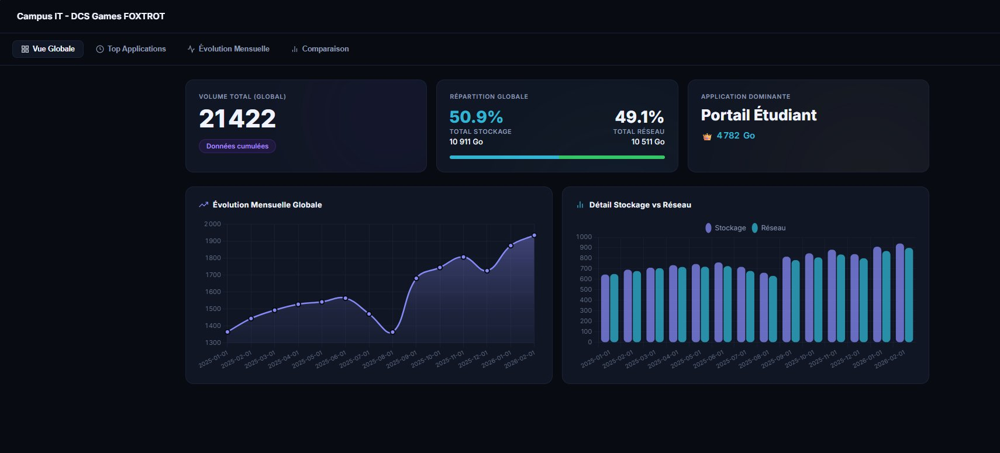
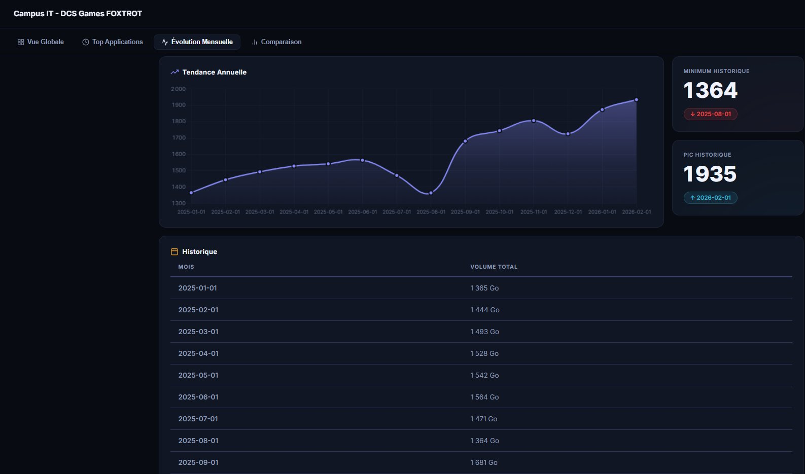
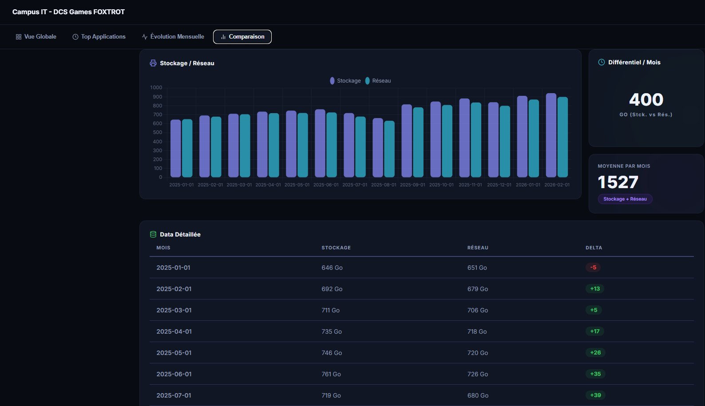

Dans le cadre des DCS IT Games 2026, épreuve de sélection organisée par l'académie de Lyon, mon équipe a réalisé un cas pratique orienté DATA. Le contexte simulé est celui d'un service informatique de campus d'enseignement supérieur souhaitant disposer d'un tableau de bord web pour suivre la consommation de ses ressources IT.
Le campus exploite cinq applications critiques — Portail Étudiant, Messagerie, Parc Informatique, Intranet et Gestion Absences — consommant du stockage, du CPU et de la bande passante réseau. L'objectif était d'identifier les applications les plus gourmandes, d'analyser les tendances mensuelles et de permettre la comparaison Stockage vs Réseau.
Le projet mobilise des compétences SISR (infrastructure, sécurisation du serveur, HTTPS) et SLAM (base de données MariaDB, requêtes SQL, développement web PHP/JS). La restitution a eu lieu le 5 mars 2026 sous forme de présentation PowerPoint et démo live.
L'architecture cible impose un flux Navigateur → HTTPS → Apache/PHP → SQL → MariaDB hébergé sur une VM Linux. Chaque couche a été déployée et sécurisée.
Client HTTP
PHP 8.x
API /api/*.php
3 tables
Technologies imposées par le sujet, toutes déployées et opérationnelles lors de la restitution.
Déploiement d'une VM Linux avec installation et configuration d'Apache 2.4, PHP 8.x et MariaDB. Virtual Host Apache configuré pour pointer sur le répertoire du projet. Création de la base de données campus_it et importation du schéma SQL fourni (tables application, ressource, consommation).
apt install apache2 php libapache2-mod-php mariadb-server php-mysql- Création BDD :
CREATE DATABASE campus_it; USE campus_it; SOURCE schema.sql; - Config Virtual Host →
a2ensite campus_it.conf && systemctl reload apache2
Certificat SSL généré via OpenSSL (auto-signé pour la démo). Activation du module mod_ssl Apache et redirection HTTP → HTTPS. Pare-feu UFW configuré pour n'autoriser que les ports 22, 80 et 443. Accès SSH sécurisé par clé, désactivation de l'accès root.
openssl req -x509 -nodes -days 365 -newkey rsa:2048 -keyout server.key -out server.crta2enmod ssl && a2ensite default-ssl && systemctl reload apache2ufw allow 22 && ufw allow 80 && ufw allow 443 && ufw enable
La base campus_it contient trois tables liées. application (app_id, nom) recense les 5 apps du campus. ressource (res_id, nom, unite) décrit les types de ressources. consommation (conso_id, app_id, res_id, mois, volume) est la table centrale interrogée par toutes les vues du dashboard.
-- Top 5 applications les plus consommatrices
SELECT a.nom, SUM(c.volume) AS total
FROM consommation c
JOIN application a ON c.app_id = a.app_id
GROUP BY a.nom ORDER BY total DESC LIMIT 5;
-- Évolution mensuelle totale
SELECT c.mois, SUM(c.volume) AS total
FROM consommation c
GROUP BY c.mois ORDER BY c.mois;
-- Comparaison Stockage vs Réseau par mois
SELECT c.mois,
SUM(CASE WHEN r.nom='Stockage' THEN c.volume ELSE 0 END) AS stockage,
SUM(CASE WHEN r.nom='Réseau' THEN c.volume ELSE 0 END) AS reseau
FROM consommation c
JOIN ressource r ON c.res_id = r.res_id
GROUP BY c.mois ORDER BY c.mois;Le dashboard affiche 4 vues : Vue Globale (volume 21 422 Go, répartition Stockage 50,9% / Réseau 49,1%, Portail Étudiant #1 à 4 782 Go, graphique ligne + histogramme) ; Top Applications (classement Top 5 barres + camembert) ; Évolution Mensuelle (courbe tendance, min 1 364 Go / max 1 935 Go, tableau historique) ; Comparaison (Stockage vs Réseau, différentiel moyen 400 Go/mois, tableau delta coloré).
- Thème sombre (
#0d1117) avec Chart.js pour tous les graphiques - Appels
fetch()vers les endpoints PHP/api/*.phprenvoyant du JSON - Navigation par onglets en JavaScript pur — aucun framework requis
- Tableau détaillé avec delta coloré vert/rouge selon les valeurs
Captures d'écran du dashboard en production sur la VM lors de la présentation du 5 mars 2026.




Tous les critères d'évaluation du sujet DCS IT Games ont été satisfaits lors de la présentation du 5 mars 2026.
| Critère | Attendu | Réalisé | Statut |
|---|---|---|---|
| Infrastructure SISR | VM Linux, Apache, PHP, MariaDB | Stack LAMP déployée, opérationnelle | ✅ OK |
| Sécurité serveur | HTTPS, SSH, pare-feu | SSL + UFW + SSH par clé | ✅ OK |
| Base de données | Schema campus_it + import données | 3 tables, données 2025 importées | ✅ OK |
| Onglet 1 — Top Apps | Top 5 consommatrices | Classement + camembert | ✅ OK |
| Onglet 2 — Évolution | Évolution mensuelle campus | Courbe + tableau + min/max | ✅ OK |
| Onglet 3 — Comparaison | Stockage vs Réseau par mois | Histogramme + tableau delta | ✅ OK |
| Qualité code | Lisible, commenté, structuré | PHP commenté, SQL justifié | ✅ OK |